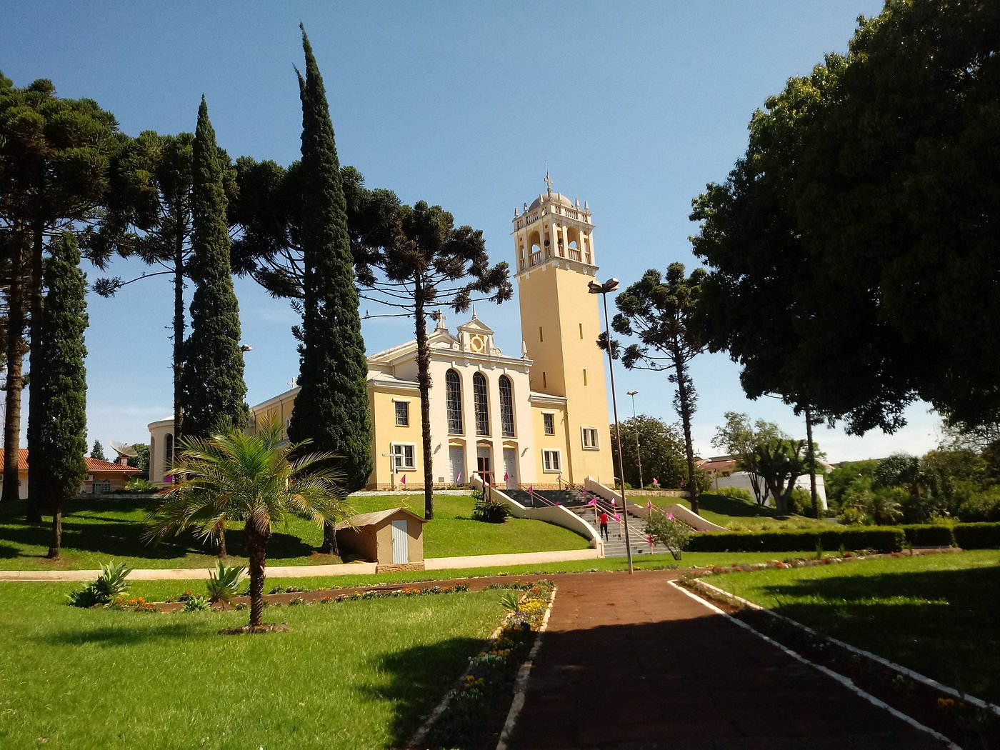
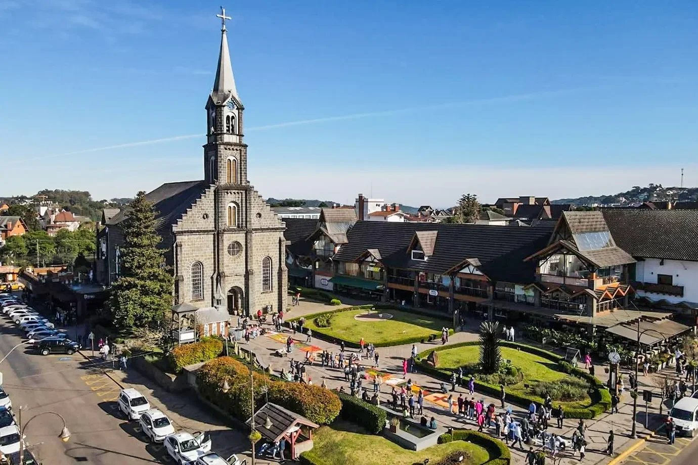
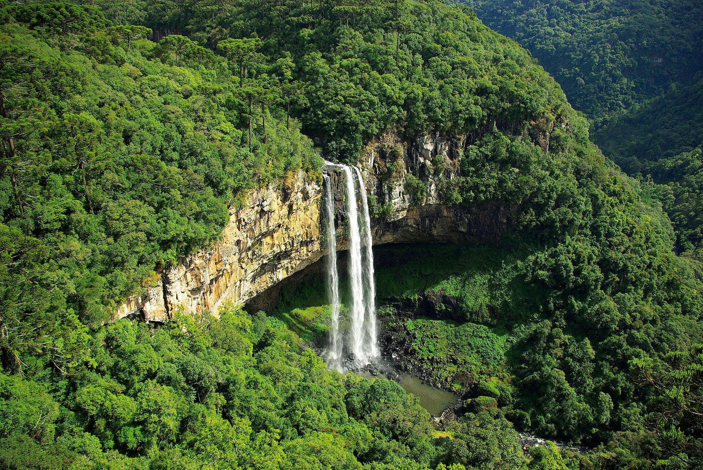
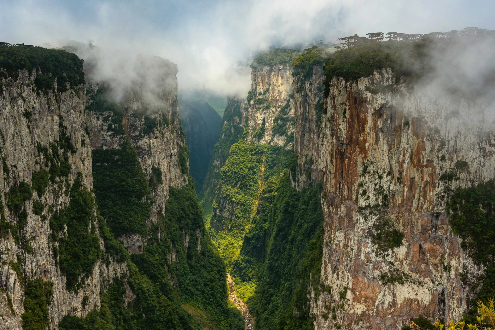
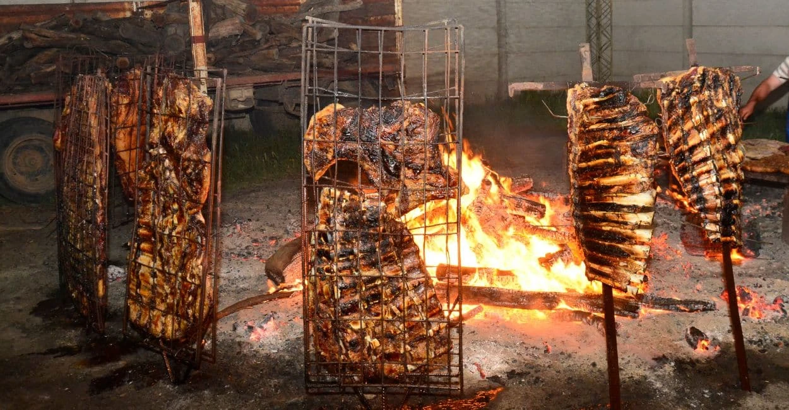
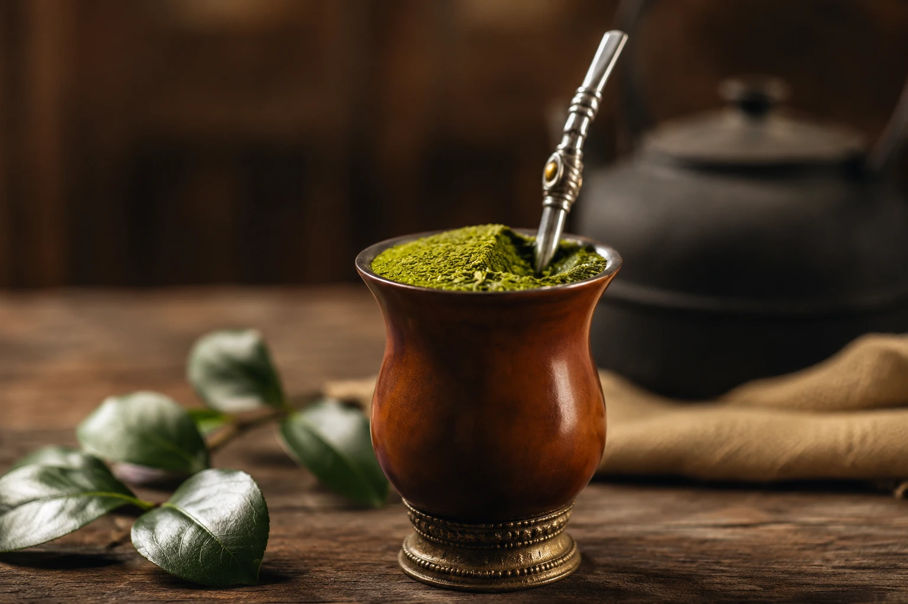

Capital
Porto Alegre
Conheça destinos, culturas, sabores e paisagens de todas as regiões
brasileiras.
Destinos, culturas e paisagens
incríveis te esperam.
O Rio Grande do Sul é o estado mais ao sul do Brasil, conhecido por sua forte influência das culturas europeias, especialmente alemã e italiana, além da proximidade cultural com os países do Prata (Uruguai e Argentina). Possui paisagens variadas que incluem serras, cânions, pampas e o litoral. O estado é amplamente reconhecido pelas tradições gaúchas, pela forte identidade cultural, pelo churrasco e por ser o maior produtor de vinhos do país.

Porto Alegre
Aproximadamente 281.707 km²
Cerca de 10,9 milhões de habitantes
Sul

Gramado é o principal destino turístico da Serra Gaúcha. A cidade encanta pela arquitetura inspirada na Europa, clima frio, gastronomia e eventos como o Natal Luz. .

Localizada em Canela, é uma das cachoeiras mais famosas do Brasil, com 131 metros de queda livre. Fica situada dentro de um parque de preservação ambiental que conta com mirantes, trilhas ecológicas e bondinhos aéreos.

Situado no Parque Nacional de Aparados da Serra, em Cambará do Sul, é um dos maiores e mais impressionantes cânions da América Latina. Seus paredões verticais chegam a 720 metros de profundidade, cortados por cachoeiras e cercados pela Mata de Araucárias

O maior símbolo da culinária do estado. Tradicionalmente assado em espetos com fogo de chão ou em churrasqueiras, prioriza cortes bovinos salgados apenas com sal grosso, preservando o sabor marcante da carne.
Prato tradicional da colonização italiana no Rio Grande do Sul. Consiste em um frango jovem assado na brasa e temperado com ervas e especiarias, geralmente servido com massas, polenta e saladas. É muito popular na região da Serra Gaúcha e representa a forte influência italiana na culinária do estado.

Mais do que uma bebida, o "chimas" é um ritual social e símbolo da hospitalidade gaúcha. Preparado com erva-mate moída e água quente (sem ferver) dentro de uma cuia, é bebido através de uma bomba de metal e compartilhado entre amigos e familiares.
Subtropical: Possui as quatro estações do ano bem definidas e uma das maiores amplitudes térmicas do Brasil. Inverno (Junho a Setembro): Pode ser bastante rigoroso, com temperaturas frequentemente abaixo de 10°C, ocorrência de geada e, eventualmente, neve nas partes mais altas da Serra. Verão (Dezembro a Março): Costuma ser muito abafado e quente, especialmente em Porto Alegre e no interior do estado, onde os termômetros passam facilmente dos 35°C.
Subtropical: Possui as quatro estações do ano bem definidas e uma das maiores amplitudes térmicas do Brasil. Inverno (Junho a Setembro): Pode ser bastante rigoroso, com temperaturas frequentemente abaixo de 10°C, ocorrência de geada e, eventualmente, neve nas partes mais altas da Serra. Verão (Dezembro a Março): Costuma ser muito abafado e quente, especialmente em Porto Alegre e no interior do estado, onde os termômetros passam facilmente dos 35°C.
Serra Gaúcha: Ideal para quem busca frio, turismo romântico, arquitetura europeia, o Vale dos Vinhedos (Bento Gonçalves) e farta gastronomia (como o tradicional Galeto Al Primo Canto e o Café Colonial).
Serra Gaúcha: Ideal para quem busca frio, turismo romântico, arquitetura europeia, o Vale dos Vinhedos (Bento Gonçalves) e farta gastronomia (como o tradicional Galeto Al Primo Canto e o Café Colonial).
Não deixe de ir a uma autêntica churrascaria ou participar de um tradicional churrasco de domingo. Faça uma degustação de vinhos e espumantes premiados nas vinícolas da Serra Gaúcha. Se alguém lhe oferecer um chimarrão, aceite como um gesto de amizade (e lembre-se: nunca mexa na bomba com a mão!).
Não deixe de ir a uma autêntica churrascaria ou participar de um tradicional churrasco de domingo. Faça uma degustação de vinhos e espumantes premiados nas vinícolas da Serra Gaúcha. Se alguém lhe oferecer um chimarrão, aceite como um gesto de amizade (e lembre-se: nunca mexa na bomba com a mão!).